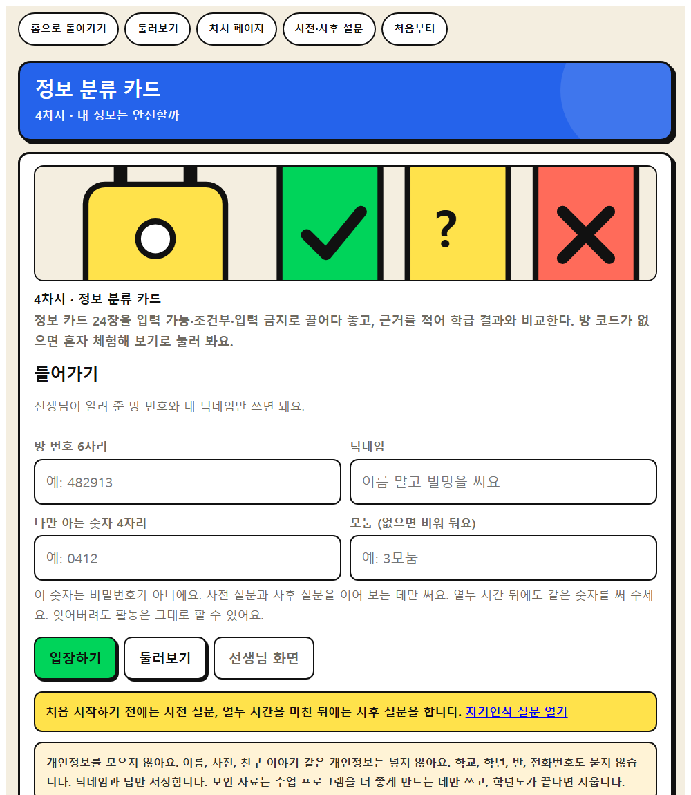
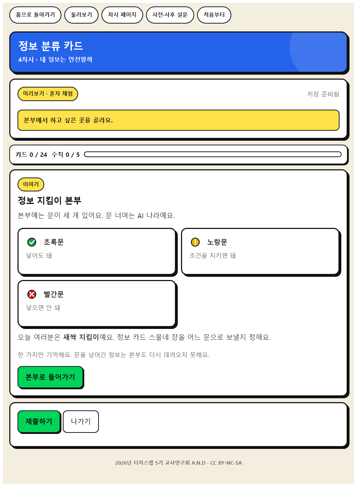
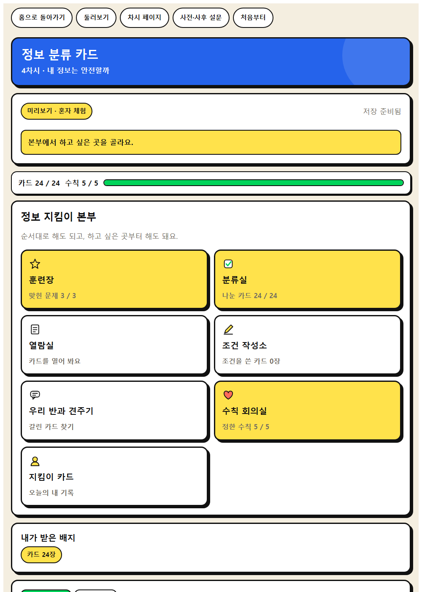
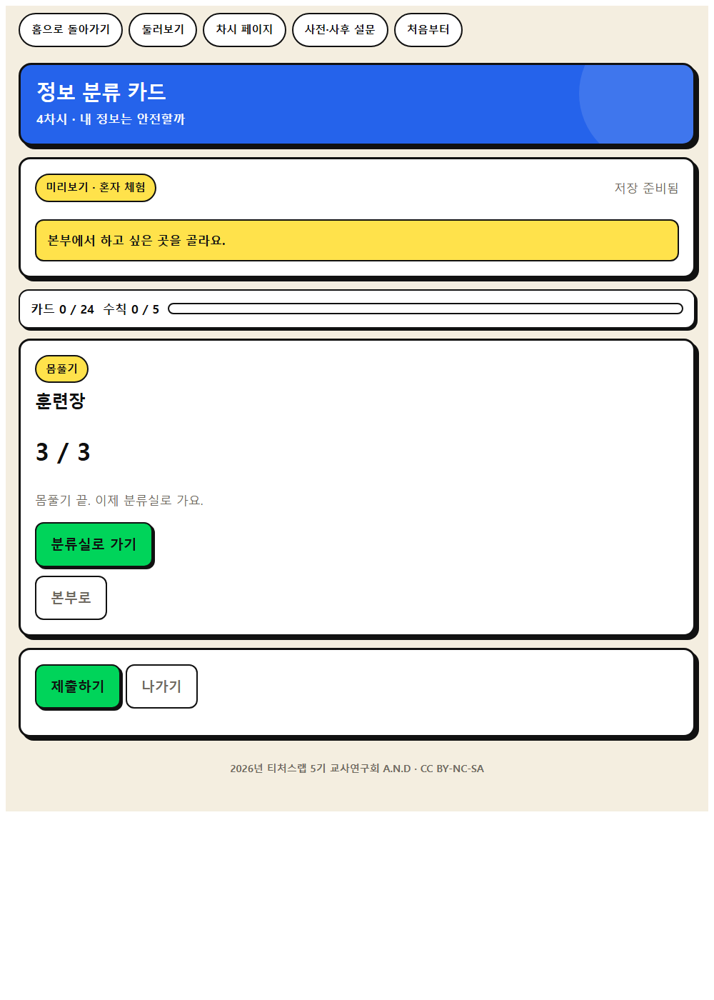
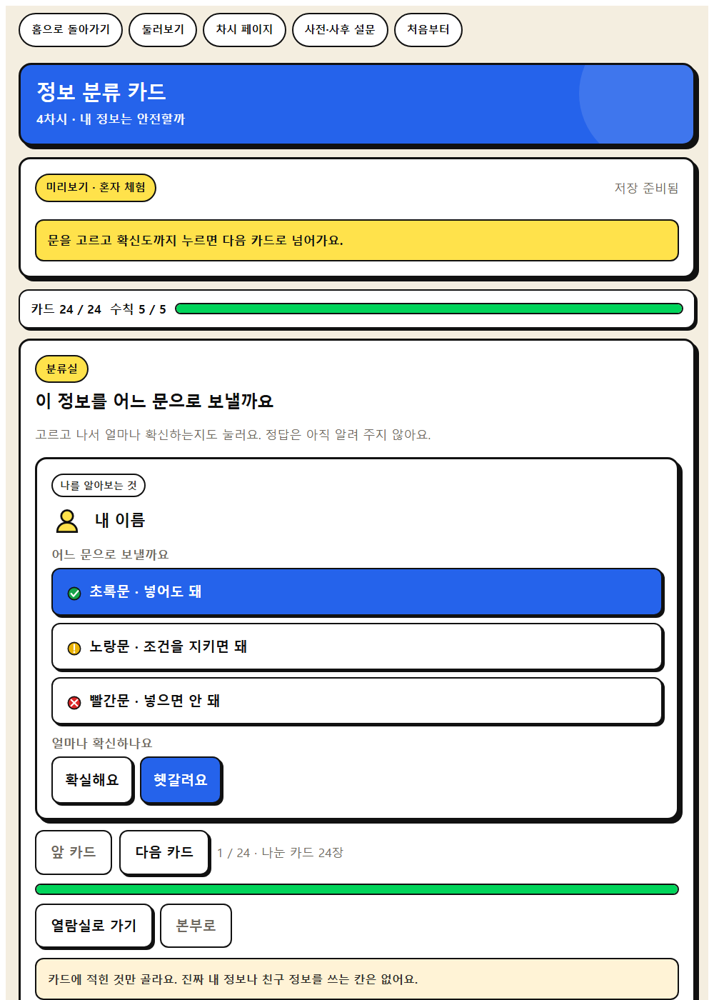
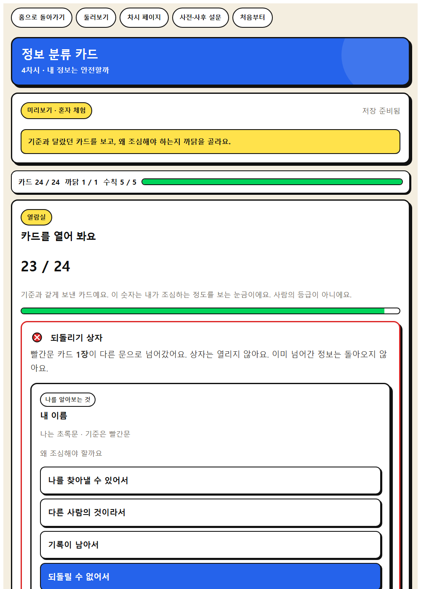
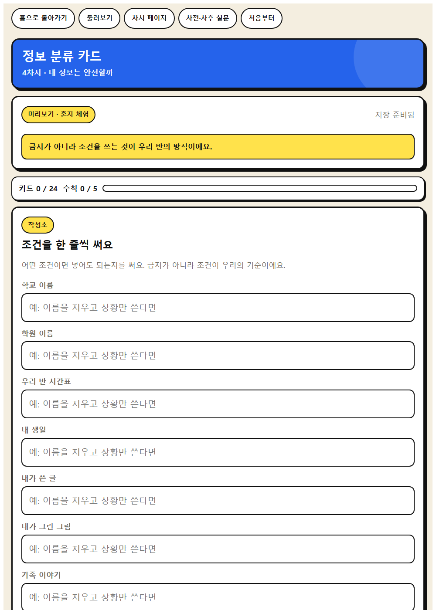
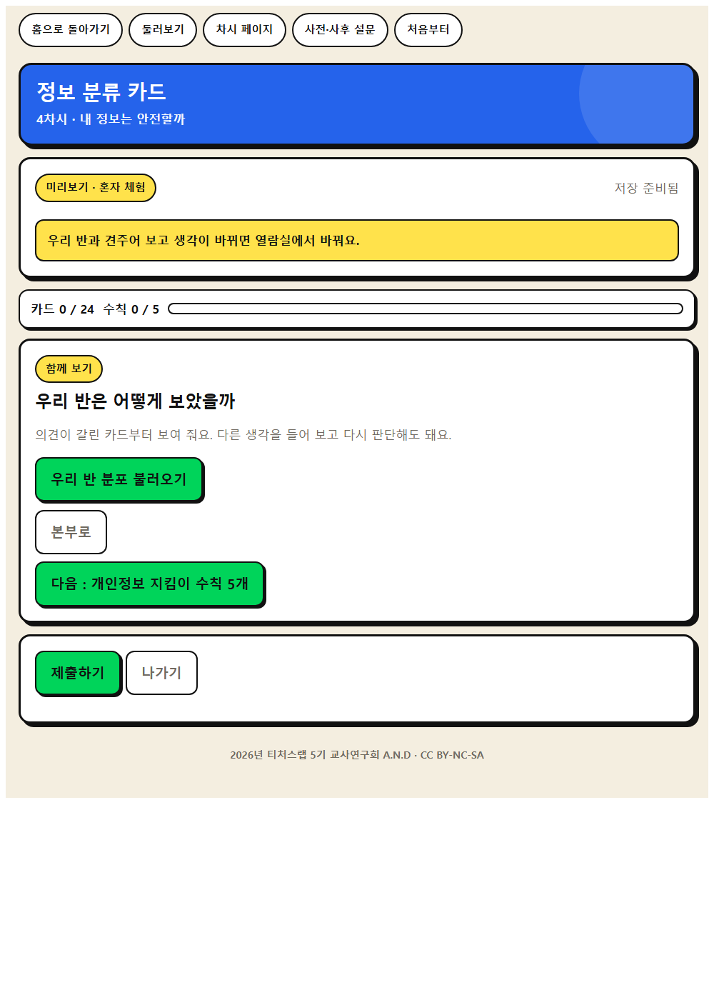

WISE 발견 · 4차시
정보 분류 카드
정보 카드 24장을 입력 가능·조건부·입력 금지로 끌어다 놓고, 근거를 적어 학급 결과와 비교한다.
이 앱으로 무엇을 하나
AI에 넣어도 되는 정보와 넣으면 안 되는 정보를 가려 봅시다.
윤리적 사고주체성직관적 통찰
배우는 것
- 윤리적 사고 · AI에 입력할 정보와 입력하면 안 되는 정보를 가려내고 주의 사항 지키기
- 주체성 · AI 활용 전에 무엇을 넣고 무엇을 넣지 않을지 스스로 결정하기
- AI적정활용 구성요소 · ⑥ 윤리·책임성
체험하는 법 (세 걸음)
- 혼자 먼저 해 본다. 앱을 열고 닉네임만 넣은 뒤 둘러보기를 누른다. 저장되지 않으니 마음껏 눌러 본다. 웹앱 열기
- 수업 직전에 방을 만든다. 앱에서 선생님 화면을 누르고 비밀번호 네 자리를 정한 뒤 새 방 만들기를 누른다. 여섯 자리 방 번호가 나온다. 칠판에 적는다.
- 학생이 들어온다. 같은 주소를 열어 방 번호와 닉네임, 나만 아는 숫자 네 자리를 넣는다. 제출하면 선생님 화면에 바로 모인다.
기기가 모자라면 모둠에 한 대로 함께 하고, 없으면 웹앱 없이 인쇄 카드 24장과 모둠 분류판만으로 동일하게 진행한다.
화면 미리 보기
실제 앱 화면입니다. 눌러서 크게 볼 수 있습니다.








수업 흐름과 발문
도입 · 5분
동기 유발
동기 유발
- 친구가 AI에게 ‘우리 반 ○○이랑 싸웠는데 어떡하지’라고 물었습니다. 괜찮을까요?
- 한 번 넣은 정보는 다시 지울 수 있을까요?
도입 · 5분
학습 문제 확인
학습 문제 확인
- AI에 넣어도 되는 정보와 넣으면 안 되는 정보를 가려 봅시다.
전개 · 30분
[활동 1] 정보 분류 카드 놀이
[활동 1] 정보 분류 카드 놀이
- 카드 24장을 넣어도 되는 것, 조건을 지키면 되는 것, 넣으면 안 되는 것으로 나눠 봅시다.
- ‘내가 쓴 글’ 카드는 어디에 놓아야 할까요?
전개 · 30분
[활동 2] 왜 위험한지 근거 말하기
[활동 2] 왜 위험한지 근거 말하기
- 빨간 칸에 놓은 카드는 왜 위험한가요?
전개 · 30분
[활동 3] 개인정보 지킴이 수칙 만들기
[활동 3] 개인정보 지킴이 수칙 만들기
- 모둠에서 지킬 수칙 5개를 우리 말로 정해 봅시다.
정리 · 5분
배움 정리
배움 정리
- 오늘 정한 수칙 중 가장 지키기 어려운 것은 무엇인가요?
정리 · 5분
다음 차시 예고
다음 차시 예고
- 다음 시간부터는 AI를 언제 어디까지 쓸지 우리가 정해 봅시다.
함께 보면 좋은 자료
- 자료 어린이·청소년 개인정보 보호 캠페인 개인정보보호위원회
도입에서 어린이 개인정보 영상을 보여 주고 챗봇에 넣으면 안 되는 정보를 목록으로 만든다.
- 자료 초등 디지털시민의 개인정보와 평판 디지털윤리.kr (방송미디어통신위원회·한국지능정보사회진흥원)
학생용 활동지로 한 번 올린 정보가 왜 되돌리기 어려운지 정리한다.
- 자료 EBS 소프트웨어·인공지능 교육 (이솦)
초등용 AI 학습 콘텐츠와 수업 영상을 무료로 받을 수 있다.
- 영상 EBS AI 단추
학년별 AI 개념 영상. 도입 자료로 한두 편 골라 쓴다.
- 영상 EBS Learning 유튜브 채널
채널 안에서 차시 주제로 검색해 최신 영상을 고른다.
- 뉴스 대한민국 정책브리핑
AI 정책과 학교 현장 기사. 사실 확인이 된 자료를 인용한다.